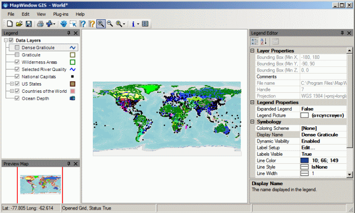
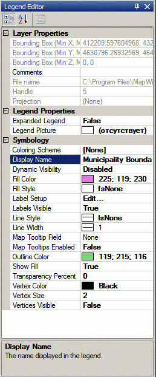
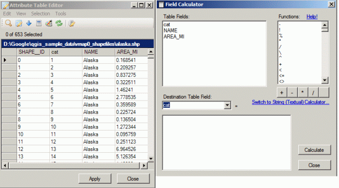
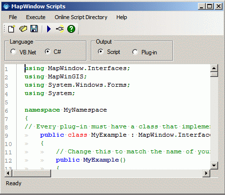
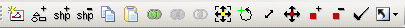
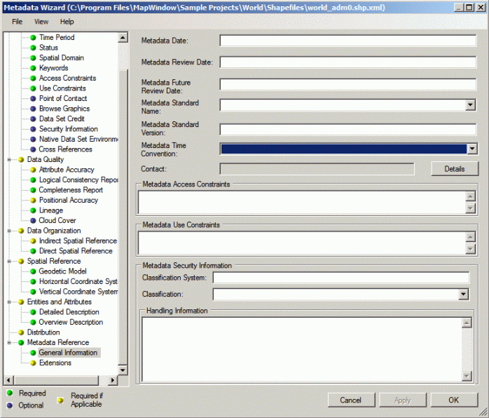

Обзор MapWindow GIS
Описание свободной ГИС MapWindow GIS
Хочется обратить внимание общественности на еще одну свободную польвательскую ГИС - MapWindow GIS, разрабатываемую Geospatial Software Lab университета шт. Айдахо. MapWindow позиционируется как настольная ГИС, просмотрщик и редактор геоданных с модульной архитектурой и набором средств для разарботки собственных ГИС. Приложение написано под Microsoft dotNet и запускается только под Windows.
Прежде всего, MapWindow будет интересна разработчикам. Ядро программы написано на С++ и представляет собой библиотеку ActiveX, которую можно использовать отдельно от MapWindow для внедрения в свои программы возможностей визуализации и обработки геоданных.
Пользовательский интерфейс и дополнительные модули написаны на С# и VB.NET, которые также могут использоваться для разработки дополнительных модулей или написания небольших скриптов во встроенном интерпретаторе.
MapWindow поддерживает следующие форматы данных :
1) векторные: ESRI Shapefile, Postgis (через экспорт в шейп-файл);
2) растровые: USU Binary, ESRI ASCII Grid, GeoTiff, ESRI Grid, ESRI FLT, USGS STDS, PAUX, PIX, DTED, ECW, BIL, MrSID, ArcInfo Grid, ERDAS Imagine img, PNG, JPEG, GIF, EMF, BMP.
Оглавление
- Установка
- Начало работы
- Пользовательский интерфейс
- Визуализация
- Работа с атрибутивной таблицей
- Программирование под MapWindow
- Дополнительные модули
- Основные недостатки
- Планы на будущее
MapWindow можно загрузить с официального сайта. Для загрузки доступны 2 версии: MapWindow Stable Release 4.6 – стабильная версия, рекомендуемая к использованию и MapWindow release сandidate 4.7 – бинарная сборка разрабатываемой версии, которую рекомендуется использовать только для ознакомления. Размер инсталляционного пакета составляет около 40 мБ, для инсталляции потребуется 137 мБ свободного дискового пространства. В процессе установки предлагается выбрать папку, куда будет установлено ПО и список дополнений. К сожалению, инсталлятор (как и сама ГИС) не русифицирован, поэтому знание английского языка не помешает.
После установки MapWindow в меню пуск, помимо иконки запуска самой программы, присутствуют иконки демонстрационных проектов Sample Project - World, Sample Project –USA, Sample Project –Newton Reservoir. Для первого знакомства можно запустить любой из них или запустить программу и загрузить свои данные.
По умолчанию запускается только базовый интерфейс MapWindow, без каких-либо дополнительных модулей. Функциональные возможности базового приложения довольно скудные, можно сказать, что оно представляет собой просмотрщик ГИС – данных, т.к большинство инструментов вынесено в отдельные модули.

Рис. 1 - Главное окно программы без модулей
Базовое приложение обладает следующими функциями:
- Просмотр и навигация по карте, идентификация объектов.
- Отображение и редактирование атрибутивной таблицы. Можно выполнять запросы и делать сортировку. Имеется встроенный калькулятор, как в ArcView /ArcGis c внушительным объемом функций.
- Редактирование и запуск скриптов , автоматическая генерация шаблона для модуля.
- Экспорт карты в растровое изображение.
По умолчанию рабочая область программы напоминает пользовательский интерфейс QGis, слева находится легенда слоев (Legend), внизу окно обзора (Preview Map), по центру область визуализации карты, внизу статусная строка. Окна обзора и легенды могут быть «плавающими», а могут привязываться к какой-нибудь стороне главного окна, опционально можно включить автоматическое скрытие для расширения рабочей области. По желанию в рабочей области можно расположить редактор легенды слоя (Legend editor), для быстрого подбора оптимальной легенды проекта (как на рис. 1).
Порядок отображения слоев и их группировка настраивается в окне легенды. Параметры визуализации отдельного слоя настраиваются в окне редактора легенды (Legend Editor) , которое может быть вызвано из контекстного меню слоя (prоperties). Для всех типов слоев можно установить такие параметры как название слоя, иконка в окне легенды, отображение в зависимости от масштаба. У векторных слоев можно выставить такие параметры как цвет, шаблон заливки и контура, классификацию по значениям атрибутов, визуализацию и положение меток, процент прозрачности слоя, динамические подсказки, визуализацию узлов. У растровых слоев можно изменить только прозрачный цвет.

Рис. 2 - Редактор легенды
 Работа с атрибутивной таблицей
Работа с атрибутивной таблицей
Работа с атрибутивной таблицей выполняется через окно редактора атрибутивной таблицы, которое может быть вызвано из контекстного меню слоя (View Attribute Table Editor). Редактор атрибутивной таблицы позволяет редактировать значения полей, делать выборку по SQL запросу, выполнять поиск и замену значений.
В редактор атрибутивной таблицы входит инструмент - калькулятор (как в ArcGis), который позволяет устанавливать значения в поле сразу всем записям используя широкий набор математических и строчных функций. Список всех функций можно узнать в Wiki.

Рис. 3 - Окно атрибутивной таблицы и калькулятор
 Программирование под MapWindow
Программирование под MapWindow
Базовое приложение MapWindow, помимо того, что является свободным программным обеспечением с открытым исходным кодом, который можно модифицировать для внедрения нужных функций, к тому же оно позволяет автоматизировать производственные процессы с помощью встроенного интерпретатора скриптов. Окно редактора скриптов можно вызвать из главного меню программы (Plug-ins-> Scripts).
Поддерживаются 2 языка разработки VB.Net и С#. Редактор скириптов позволяет с нуля написать код, загрузить готовые скрипты с сайта MapWindow, опубликовать результат своей деятельности в репозитории скриптов. При переключении в режим разработки дополнения (Plugin) автоматически генерируются методы для регистрации модуля в MapWindow.
В самом редакторе подсвечивается синтаксис кода в стиле MS Visual Studio, автоматически нумеруются строки, автоматическая проверка синтаксиса и автодополнение кода, к сожалению, отсутствуют, поэтому для написания больших программ он вряд ли подойдет.

Рис. 4 - Встроенный редактор скриптов
Функции MapWindow значительно расширяются при использовании дополнительных модулей, входящих в дистрибутив. Включить дополнительные модули можно в окне редактора дополнений (Edit Plug-ins) из главного меню приложения Plug-ins->Edit Plug-ins. В дистрибутив входят следующие модули:
- Shapefile Editor (Редактор шейп-файлов) добавляет инструменты редактирования и создания шейп-файлов. В модуль включены следующие функции: создать шейп-файл, добавить геометрическую фигуру (круг, квадрат, эллипс) , добавить объект (шейп ), удалить объект, копировать объект в буфер обмена, вставить объект из буфера обмена, объединить объекты, обрезать слой по границам объектов, обрезать слой за границами объектов, передвинуть объект, повернуть объект, изменить размер объекта, подвинуть узел, добавить узел в объект, удалить узел из объекта и функции для отката выполненных действий.

Рис. 5 - Панель инструментов редактора
- Online data plugin (дополнение для работы с веб сервисами) – позволяет добавлять в проект слои ArcIMS, WMS, WFS.
- Gis Tools (ГИС инструменты) – модуль добавляет набор инструментов для обработки данных и содержит следующие функции:
- для растровых изображений : установить проекцию, перепроецировать, изменить формат, изменить разрешение, объединить, обрезать по полигону, привязать, сгенерировать горизонтали, создать world файл.
- для шейп-файлов: установить проекцию, перепроецировать, построить буфер, вычислить площади полигонов, разрезать полигоны линиями, обрезать шейп-файл по границе полигона, обрезать шейп-файл за границами полигона, объединить шейп-файлы.
- Open Metadata Manager (менеджер метаданных) – позволяет добавлять, просматривать и редактировать метаданные для шейп- файлов и растровых изображений.

Рис. 6 - Окно редактора метаданны
- GPS Tools - добавляет функции коммуникации с приемником GPS.
- Measuring tools - содержит инструменты для измерения расстояний и площадей.
- Watershed Deliniation – набор инструментов для гидрологического анализа по цифровой модели рельефа.
С сайта можно загрузить модули, которые не входят в стандартный дистрибутив, такие как 3-D TIN Viewer Plug-in, Water Quality Analyst Plug-in, Mapserver Project Generator.
Все программы обладают своими недостатками и MapWindow не исключение. Каждый пользователь может найти их множество применительно к своему виду деятельности, далее перечислены только основные:
- Отсутствие русификации.
- Единственный поддерживаемый формат векторных данных – shape-файл.
- Отсутствие возможности совместной работы.
- Отсутствие встроенного редактора компоновок.
Сейчас для скачивания доступен релиз кандидат MapWindow 4.7. А разработчики активно трудятся над новой версией MapWindow 6.0, дата релиза пока не известна.
В новой версии ядро будет переписано на чистом dotNet. Также планируется использование библиотеки абстракции (GDAL/OGR) и поддержка 3D визуализации через DirectX.
Дата создания: 27.05.2009
Автор(ы): Александр Дорофеев